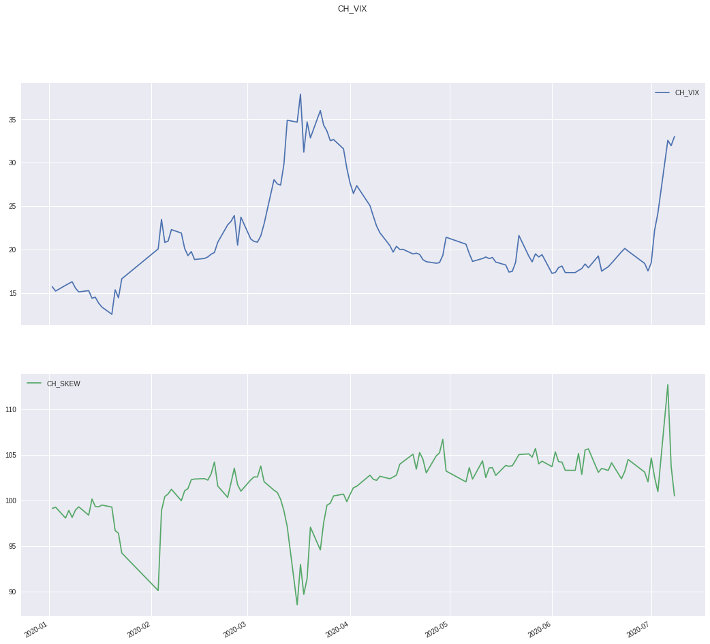
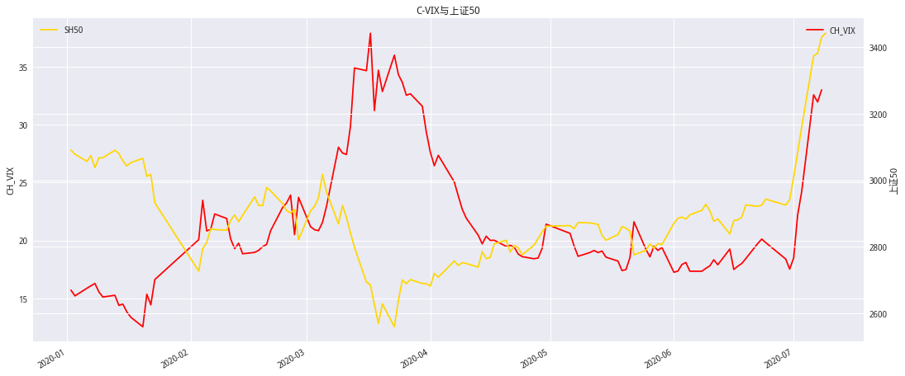
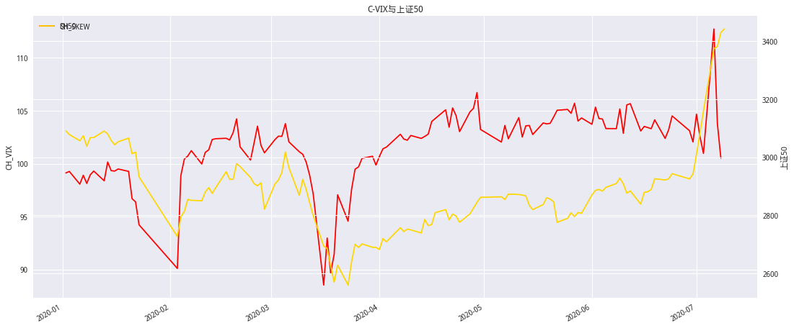
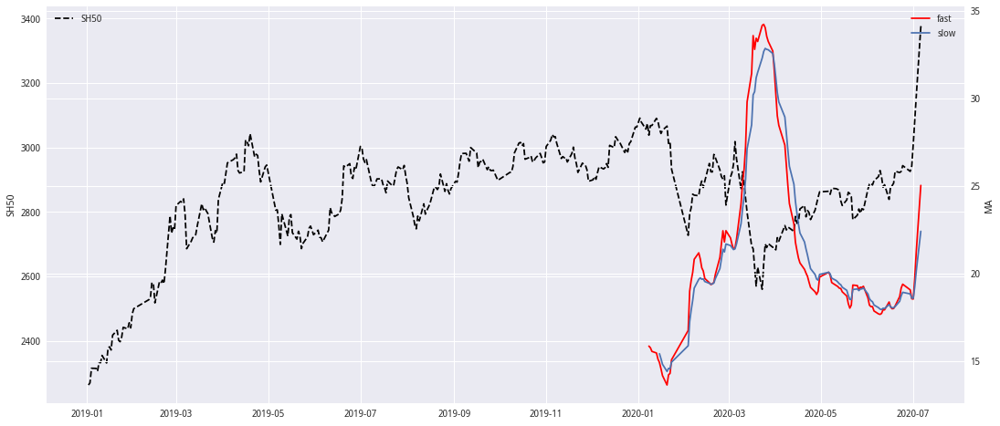
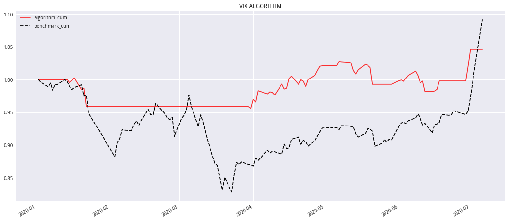
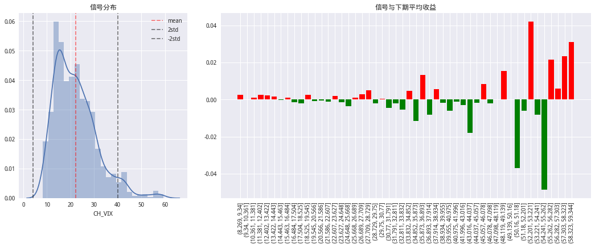
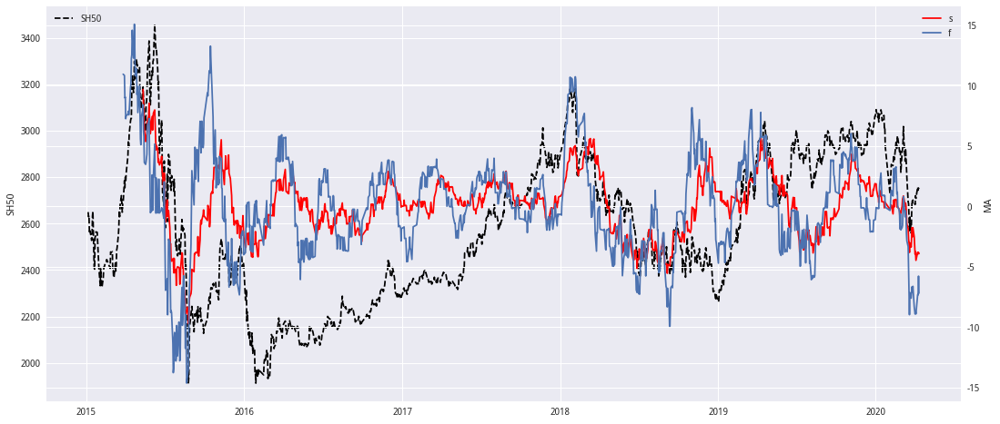
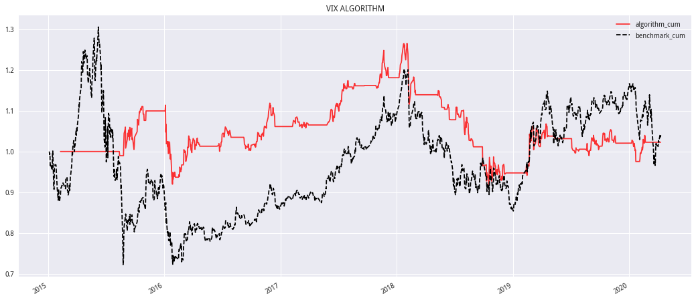

import pickle
import json
import talib
import numpy as np
import pandas as pd
import tushare as ts
from tqdm import *
from jqdata import *
from datetime import timedelta
from scipy.interpolate import interp1d
import seaborn as sns
import matplotlib as mpl
import matplotlib.pyplot as plt
import matplotlib.dates as mdate
import matplotlib.gridspec as mg # 不规则子图
%matplotlib inline
# 设置字体 用来正常显示中文标签
mpl.rcParams['font.sans-serif'] = ['SimHei']
#mpl.rcParams['font.family'] = 'serif'
# 用来正常显示负号
mpl.rcParams['axes.unicode_minus'] = False
# 图表主题
plt.style.use('seaborn')
# 请根据自己的情况填写ts的token
setting = json.load(open('../config.json'))
pro = ts.pro_api(setting['token'])
VIX计算方法#
白皮书具体步骤:
CBOE白皮书对无风险收益率的描述是:
The risk-free interest rates, \(R_1\) and \(R_2\), are yields based on U.S. Treasury yield curve rates (commonly referred to as“Constant Maturity Treasury” rates or CMTs), to which a cubic spline is applied to derive yields on the expiration dates ofrelevant SPX options.
所有在这里我用的SHIBOR利率,具体处理见GetShiBor函数
class CH_VIX(object):
def __init__(self,symbol,start_date,end_date,read=False):
self.symbol = symbol
self.start_date = start_date
self.end_date = end_date
self.read = read
self.OptData = pd.DataFrame()
def GetCBOE_VIX(self) -> pd.Series:
if self.read:
self.OptData = pd.read_csv('../Data/OptData.csv',index_col=0,parse_dates=['date'])
else:
self.PrepareData()
start_dt = min(self.OptData['date'])
end_dt = max(self.OptData['date'])
df_rate = self.GetShiBor(start_dt, end_dt)
date_index = [] # 储存index
vix_value = [] # 储存vix
skew_value = [] # 储存skew
for trade_date, slice_df in tqdm(self.OptData.groupby('date'), desc='计算中..',leave=True):
maturity, df_jy, df_cjy = self.filter_contract(slice_df)
# 获取无风险收益
rf_rate_jy = df_rate.loc[trade_date, int(maturity['jy'] * 365)]
rf_rate_cjy = df_rate.loc[trade_date, int(maturity['cjy'] * 365)]
# 计算远期价格
fp_jy = self.cal_forward_price(maturity['jy'], rf_rate=rf_rate_jy, df=df_jy)
fp_cjy = self.cal_forward_price(maturity['cjy'], rf_rate=rf_rate_cjy, df=df_cjy)
# 计算中间价格
df_mp_jy = self.cal_mid_price(maturity['jy'], df_jy, fp_jy)
df_mp_cjy = self.cal_mid_price(maturity['cjy'], df_cjy, fp_cjy)
# 计算行权价差
df_diff_k_jy = self.cal_k_diff(df_jy)
df_diff_k_cjy = self.cal_k_diff(df_cjy)
# 计算VIX
df_tovix_jy = pd.concat([df_mp_jy, df_diff_k_jy], axis=1).reset_index()
df_tovix_cjy = pd.concat([df_mp_cjy, df_diff_k_cjy],
axis=1).reset_index()
nearest_k_jy = self._nearest_k(df_jy, fp_jy)
nearest_k_cjy = self._nearest_k(df_cjy, fp_cjy)
vix = self.cal_vix(df_tovix_jy, fp_jy, rf_rate_jy, maturity['jy'],
nearest_k_jy, df_tovix_cjy, fp_cjy, rf_rate_cjy,
maturity['cjy'], nearest_k_cjy)
skew = self.cal_skew(df_tovix_jy, fp_jy, rf_rate_jy, maturity['jy'],
nearest_k_jy, df_tovix_cjy, fp_cjy, rf_rate_cjy,
maturity['cjy'], nearest_k_cjy)
date_index.append(trade_date)
vix_value.append(vix)
skew_value.append(skew)
data = pd.DataFrame({
"CH_VIX": vix_value,
"CH_SKEW": skew_value
},
index=date_index)
data.fillna(method='pad', inplace=True)
data.index = pd.DatetimeIndex(data.index)
return data
# 获取期权信息
def GetOptContractBasicInfo(self) -> pd.DataFrame:
# CO-认购期权，PO-认沽期权
OptionContractBasicInfo = opt.run_query(
query(opt.OPT_CONTRACT_INFO.list_date,
opt.OPT_CONTRACT_INFO.exercise_date,
opt.OPT_CONTRACT_INFO.exercise_price,
opt.OPT_CONTRACT_INFO.contract_type,
opt.OPT_CONTRACT_INFO.code).filter(
opt.OPT_CONTRACT_INFO.underlying_symbol == self.symbol,
opt.OPT_CONTRACT_INFO.last_trade_date >= self.start_date,
opt.OPT_CONTRACT_INFO.list_date <= self.end_date))
return OptionContractBasicInfo
# 获取期权日线行情
@staticmethod
def GetOptDailyPrice(code_list:list) -> pd.DataFrame:
price_temp = [] # 储存数据
# 获取某合约代码日数据
for CODE in tqdm(code_list, desc='DownLoad Daily Price',leave=True):
q = query(
opt.OPT_DAILY_PRICE.date, opt.OPT_DAILY_PRICE.close,
opt.OPT_DAILY_PRICE.code).filter(opt.OPT_DAILY_PRICE.code == CODE)
price_temp.append(opt.run_query(q))
return pd.concat(price_temp)
# 数据准备
def PrepareData(self):
start = self.start_date
end = self.end_date
# 获取期权基本信息
OptContractBasicInfo = self.GetOptContractBasicInfo()
# 获取期权合约代码
code_list = OptContractBasicInfo['code'].unique().tolist()
# 获取日线行情
OptDailyPrice = self.GetOptDailyPrice(code_list)
# 查询计算期里的日线
date_ = pd.to_datetime(OptDailyPrice['date'])
OptDailyPrice = OptDailyPrice[(date_>=start)&(date_<=end)]
OptData = pd.merge(OptDailyPrice, OptContractBasicInfo, on='code')
# 计算到行权日距离
## T的计算
OptData['maturity'] = (pd.to_datetime(OptData['exercise_date']) -
pd.to_datetime(OptData['date'])) / timedelta(365)
use_col = 'date,close,contract_type,exercise_price,maturity'.split(',')
df_use = OptData[use_col].copy()
df_use['contract_type'] = df_use['contract_type'].map({
"CO": "call",
"PO": "put"
})
df_use = df_use.sort_values('date')
print('数据已储存../Data/OptData.csv')
df_use.to_csv('../Data/OptData.csv')
self.OptData = df_use
# 通过ts获取SHIBOR数据
@staticmethod
def GetShiBor(startDate: str, endDate: str) -> pd.DataFrame:
'''
startDate,endDate 格式需要为yyyy-mm-dd
'''
# 单次最大2000行
limit = 2000
dates = [x.strftime('%Y%m%d') for x in get_trade_days(startDate, endDate)]
n_days = len(dates)
if n_days > limit:
n = n_days // limit
df_list = []
i = 0
pos1, pos2 = n * i, n * (i + 1) - 1
while pos2 < n_days:
# 根据@艾布拉姆斯的提示 修复此部分
df = pro.shibor(
start_date=dates[pos1], end_date=dates[pos2]).set_index('date')
df_list.append(shibor_df)
i += 1
pos1, pos2 = n * i, n * (i + 1) - 1
if pos1 < n_days:
df = pro.shibor(
start_date=dates[pos1], end_date=dates[-1]).set_index('date')
df_list.append(df)
shibor_df = pd.concat(df_list, axis=0)
else:
shibor_df = pro.shibor(
start_date=startDate.strftime('%Y%m%d'),
end_date=endDate.strftime('%Y%m%d')).set_index('date')
shibor_df.index = pd.DatetimeIndex(shibor_df.index)
shibor_df.sort_index(inplace=True)
# 差值
def _interpld_fun(r):
y_vals = r.values / 100
daily_range = np.arange(1, 361)
periods = [1, 7, 14, 30, 90, 180, 270, 360]
# 插值
f = interp1d(periods, y_vals, kind='cubic')
t_ser = pd.Series(data=f(daily_range), index=daily_range)
return t_ser
shibor_df = shibor_df.apply(lambda x: _interpld_fun(x), axis=1)
shibor_df.index = pd.DatetimeIndex(shibor_df.index)
return shibor_df
# 选出当日的近远月合约(且到期日大于1周)
def filter_contract(self,cur_df: pd.DataFrame):
# 今天在交易的合约的到期日
ex_t = cur_df['maturity'].unique()
# 选择到期日大于等于5天的数据
ex_t = ex_t[ex_t >= 5. / 365]
# 到期日排序，最小两个为近月、次近月
try:
jy_dt, cjy_dt = np.sort(ex_t)[:2]
except ValueError:
print(ex_t,np.sort(ex_t)[:2])
maturity_dict = dict(zip(['jy', 'cjy'], [jy_dt, cjy_dt]))
# 选取近月及次近月合约
cur_df = cur_df[cur_df['maturity'].isin([jy_dt, cjy_dt])]
keep_cols = ['close', 'contract_type', 'exercise_price']
cur_df_jy = cur_df.query('maturity==@jy_dt')[keep_cols]
cur_df_cjy = cur_df.query('maturity==@cjy_dt')[keep_cols]
cur_df_jy = cur_df_jy.pivot_table(
index='exercise_price', columns='contract_type', values='close')
cur_df_cjy = cur_df_cjy.pivot_table(
index='exercise_price', columns='contract_type', values='close')
# TODO:df 中可能存在缺少call,put的情况需要加过滤check一下
# 检查字段
cur_df_jy = self._check_fields(cur_df_jy)
cur_df_cjy = self._check_fields(cur_df_cjy)
# 绝对值差异
cur_df_jy['diff'] = np.abs(cur_df_jy['call'] - cur_df_jy['put'])
cur_df_cjy['diff'] = np.abs(cur_df_cjy['call'] - cur_df_cjy['put'])
return maturity_dict, cur_df_jy, cur_df_cjy
# 字段检查
@staticmethod
def _check_fields(x_df: pd.DataFrame) -> pd.DataFrame:
# 目标字段
target_fields = ['call', 'put']
for col in target_fields:
if col not in x_df.columns:
print("%s字段为空" % col)
x_df[col] = 0
return x_df
# 计算远期价格
@staticmethod
def cal_forward_price(maturity: dict, rf_rate: float,
df: pd.DataFrame) -> float:
# 获取认购与认沽的绝对值差异最小值的信息
min_con = df.sort_values('diff').iloc[0]
# 获取的最小exercise_price
k_min = min_con.name
# F = Strike Price + e^RT x (Call Price - Put Price)
f_price = k_min + np.exp(maturity * rf_rate) * (
min_con['call'] - min_con['put'])
return f_price
# 计算中间价格
def cal_mid_price(self,maturity: dict, df: pd.DataFrame,
forward_price: float) -> pd.DataFrame:
def _cal_mid_fun(x, val: float):
res = None
if x['exercise_price'] < val:
res = x['put']
elif x['exercise_price'] > val:
res = x['call']
else:
res = (x['put'] + x['call']) / 2
return res
# 小于远期价格且最靠近的合约的行权价
m_k = self._nearest_k(df, forward_price)
ret = pd.DataFrame(index=df.index)
# 计算中间件
m_p_lst = df.reset_index().apply(lambda x: _cal_mid_fun(x, val=m_k), axis=1)
ret['mid_p'] = m_p_lst.values
return ret
# 寻找最近合约
@staticmethod
def _nearest_k(df: pd.DataFrame, forward_price: float) -> float:
# 行权价等于或小于远期价格的合约
temp_df = df[df.index <= forward_price]
if temp_df.empty:
temp_df = df
m_k = temp_df.sort_values('diff').index[0]
return m_k
# 计算行权价间隔
@staticmethod
def cal_k_diff(df: pd.DataFrame) -> pd.DataFrame:
arr_k = df.index.values
ret = pd.DataFrame(index=df.index)
res = []
res.append(arr_k[1] - arr_k[0])
res.extend(0.5 * (arr_k[2:] - arr_k[0:-2]))
res.append(arr_k[-1] - arr_k[-2])
ret['diff_k'] = res
return ret
# 计算VIX
@staticmethod
def cal_vix_sub(df: pd.DataFrame, forward_price: float, rf_rate: float,
maturity: float, nearest_k: float):
def _vix_sub_fun(x):
ret = x['diff_k'] * np.exp(rf_rate * maturity) * x['mid_p'] / np.square(
x['exercise_price'])
return ret
temp_var = df.apply(lambda x: _vix_sub_fun(x), axis=1)
sigma = 2 * temp_var.sum() / maturity - np.square(forward_price /
nearest_k - 1) / maturity
return sigma
# 计算近、次近月VIX
def cal_vix(self,df_jy: pd.DataFrame, forward_price_jy: float, rf_rate_jy: float,
maturity_jy: float, nearest_k_jy: float, df_cjy: pd.DataFrame,
forward_price_cjy: float, rf_rate_cjy: float, maturity_cjy: float,
nearest_k_cjy: float):
sigma_jy = self.cal_vix_sub(df_jy, forward_price_jy, rf_rate_jy, maturity_jy,
nearest_k_jy)
sigma_cjy = self.cal_vix_sub(df_cjy, forward_price_cjy, rf_rate_cjy,
maturity_cjy, nearest_k_cjy)
w = (maturity_cjy - 30.0 / 365) / (maturity_cjy - maturity_jy)
to_sqrt = maturity_jy * sigma_jy * w + maturity_cjy * sigma_cjy * (1 - w)
if to_sqrt >= 0:
vix = 100 * np.sqrt(to_sqrt * 365.0 / 30)
else:
vix = np.nan
return vix
# 计算SKEW
def cal_skew(self,df_jy:pd.DataFrame, forward_price_jy:float, rf_rate_jy:float, maturity_jy:float, nearest_k_jy:float,
df_cjy:pd.DataFrame, forward_price_cjy:float, rf_rate_cjy:float, maturity_cjy:float,
nearest_k_cjy:float)->float:
s_jy = self.cal_moments_sub(df_jy, maturity_jy, rf_rate_jy, forward_price_jy,
nearest_k_jy)
s_cjy = self.cal_moments_sub(df_cjy, maturity_cjy, rf_rate_cjy,
forward_price_cjy, nearest_k_cjy)
w = (maturity_cjy - 30.0 / 365) / (maturity_cjy - maturity_jy)
skew = 100 - 10 * (w * s_jy + (1 - w) * s_cjy)
return skew
@staticmethod
def cal_epsilon(forward_price:float, nearest_k:float)->tuple:
e1 = -(1 + np.log(forward_price / nearest_k) - forward_price / nearest_k)
e2 = 2 * np.log(nearest_k / forward_price) * (
nearest_k / forward_price - 1) + np.square(
np.log(nearest_k / forward_price)) * 0.5
e3 = 3 * np.square(np.log(nearest_k / forward_price)) * (
np.log(nearest_k / forward_price) / 3 - 1 + forward_price / nearest_k)
return e1, e2, e3
def cal_moments_sub(self,df:pd.DataFrame, maturity:float, rf_rate:float, forward_price:float, nearest_k:float)->float:
e1, e2, e3 = self.cal_epsilon(forward_price, nearest_k)
temp_p1 = -np.sum(
df['mid_p'] * df['diff_k'] / np.square(df['exercise_price']))
p1 = np.exp(maturity * rf_rate) * (temp_p1) + e1
temp_p2 = np.sum(df['mid_p'] * df['diff_k'] * 2 *
(1 - np.log(df['exercise_price'] / forward_price)) /
np.square(df['exercise_price']))
p2 = np.exp(maturity * rf_rate) * (temp_p2) + e2
temp_p3 = temp_p3 = np.sum(
df['mid_p'] * df['diff_k'] * 3 *
(2 * np.log(df['exercise_price'] / forward_price) -
np.square(np.log(df['exercise_price'] / forward_price))) /
np.square(df['exercise_price']))
p3 = np.exp(maturity * rf_rate) * (temp_p3) + e3
s = (p3 - 3 * p1 * p2 + 2 * p1**3) / (p2 - p1**2)**(3 / 2)
return s
# 获取CBOE的VIX SKEW
VIX = CH_VIX('510300.XSHG','2015-02-09','2021-10-31',False)
VIX_ser = VIX.GetCBOE_VIX()
DownLoad Daily Price: 100%|██████████| 812/812 [00:23<00:00, 35.17it/s]
数据已储存../Data/OptData.csv
计算中..: 100%|██████████| 448/448 [00:20<00:00, 22.25it/s]
VIX_ser.to_csv('hs300_vix.csv')
VIX_ser.plot(figsize=(18, 16), title='CH_VIX', subplots=True)
array([AxesSubplot(0.125,0.570909;0.775x0.309091),
AxesSubplot(0.125,0.2;0.775x0.309091)], dtype=object)

SH50 = get_price('000016.XSHG','2020-01-01','2020-07-09',fields='close')
mpl.rcParams['font.family'] = 'serif'
fig = plt.figure(figsize=(18,8))
ax1 = fig.add_subplot(111)
ax1.set_title('C-VIX与上证50')
VIX_ser['CH_VIX'].reindex(SH50.index).plot(ax=ax1,color='r')
ax1.set_ylabel('CH_VIX')
plt.legend(loc=1)
ax2 = ax1.twinx()
SH50['close'].plot(ax=ax2,color='#FFD700',label='SH50')
ax2.set_ylabel('上证50')
plt.legend()
plt.show()

mpl.rcParams['font.family'] = 'serif'
fig = plt.figure(figsize=(18,8))
ax1 = fig.add_subplot(111)
ax1.set_title('C-VIX与上证50')
VIX_ser['CH_SKEW'].reindex(SH50.index).plot(ax=ax1,color='r')
ax1.set_ylabel('CH_VIX')
plt.legend(loc=2)
ax2 = ax1.twinx()
SH50['close'].plot(ax=ax2,color='#FFD700',label='SH50')
ax2.set_ylabel('上证50')
plt.legend()
plt.show()

VIX择时#
波动率VIX指数是跟踪市场波动性的指数，一般通过标的期权的隐含波动率计算得来，以芝加哥期权交易所的VIX指数为例，如标的期权的隐含波动率越高，则VIX指数相应越高，一般而言，该指数反映出投资者愿意付出多少成本去对冲投资风险。业内认为，当VIX越高时，表示市场参与者预期后市波动程度会更加激烈，同时也反映其不安的心理状态；相反，VIX越低时，则反映市场参与者预期后市波动程度会趋于缓和的心态。因此，VIX又被称为投资人恐慌指标（The Investor Fear Gauge）。
策略思路
当VIX指数快速上升时，表示市场恐慌情绪蔓延，产生卖出信号
当VIX指数快速下降时，恐慌情绪有所舒缓，产生买入信号
实际回测时:卖出买入信号均用来买卖华夏上证50ETF基金
具体信号构造：
计算VIX的快慢均线
死叉买入 金叉卖出
SH50 = get_price('000016.XSHG','2019-01-01','2020-07-07',fields='close')
fast_ma = talib.EMA(VIX_ser['CH_VIX'],5)
slow_ma = talib.EMA(VIX_ser['CH_VIX'],10)
plt.figure(figsize=(18,8))
plt.plot(SH50['close'],label='SH50',color='black',ls='--')
plt.ylabel('SH50')
plt.legend(loc=2)
plt.twinx()
plt.plot(fast_ma,label='fast',color='r')
plt.plot(slow_ma,label='slow')
plt.ylabel('MA')
plt.legend()
plt.show()

#
flag = np.where(slow_ma >= fast_ma,1,0)
next_ret = SH50['close'].pct_change().shift(-1)
#
plt.figure(figsize=(18,8))
plt.title('VIX ALGORITHM')
(1+flag*next_ret.reindex(fast_ma.index)).cumprod().plot(color='r',alpha=0.8)
(SH50['close'].reindex(fast_ma.index) / SH50['close'].reindex(fast_ma.index)[0]).plot(color='black',ls='--')
plt.legend(['algorithm_cum','benchmark_cum'])
<matplotlib.legend.Legend at 0x7fa6c93f1a58>

VIX对应的下期收益#
# 显示数据分布
def ShowDistribution(singal_ser: pd.DataFrame, close_ser: pd.DataFrame):
test = pd.concat([singal_ser, close_ser.pct_change().shift(-1)], axis=1)
test = test.dropna()
test.columns = ['singal', 'next_ret']
v = pd.cut(test['singal'], bins=50)
test['group'] = v
mean_ret = test.groupby('group')['next_ret'].mean()
plt.rcParams['font.family'] = 'serif'
plt.figure(figsize=(18, 6))
# 用于设置不规则子图
gs = mg.GridSpec(1, 3)
# 子图-信号分布
plt.subplot(gs[0, 0])
plt.title('信号分布')
sns.distplot(singal_ser.dropna())
plt.axvline(singal_ser.mean(), ls='--', color='r', alpha=0.5, label='mean')
plt.axvline(
singal_ser.mean() + 2 * singal_ser.std(),
ls='--',
color='black',
alpha=0.5,
label='2std')
plt.axvline(
singal_ser.mean() - 2 * singal_ser.std(),
ls='--',
color='black',
alpha=0.5,
label='-2std')
plt.legend()
# 子图-信号与下期平均收益
plt.subplot(gs[0, 1:3])
plt.title('信号与下期平均收益')
# 设置标签
labels = mean_ret.index
# 大于0
a = np.where(mean_ret >= 0, mean_ret, 0)
# 小于0
b = np.where(mean_ret < 0, mean_ret, 0)
plt.bar(range(len(a)), a, tick_label=labels, color='r')
plt.bar(range(len(b)), b, tick_label=labels, color='green')
# 标签旋转
plt.xticks(rotation=90)
plt.show()
ShowDistribution(VIX_ser['CH_VIX'],SH50['close'])

构造单向波动率信号
PCT_CHG = SH50['close'].pct_change()
PCT_CHG = PCT_CHG.reindex(VIX_ser.index)
up = np.where(PCT_CHG > 0,VIX_ser['CH_VIX'],0)
down = np.where(PCT_CHG < 0,VIX_ser['CH_VIX'],0)
singal = pd.Series(up - down,index = PCT_CHG.index)
fast_ma = talib.SMA(singal,30)
slow_ma = talib.SMA(singal,60)
plt.figure(figsize=(18,8))
plt.plot(SH50['close'],label='SH50',color='black',ls='--')
plt.ylabel('SH50')
plt.legend(loc=2)
plt.twinx()
plt.plot(slow_ma,label='s',color='r')
plt.plot(fast_ma,label='f')
plt.ylabel('MA')
plt.legend()
plt.show()

#
flag = np.where(slow_ma < fast_ma,1,0)
next_ret = SH50['close'].pct_change().shift(-1)
#
plt.figure(figsize=(18,8))
plt.title('VIX ALGORITHM')
(1+flag*next_ret.reindex(fast_ma.index)).cumprod().plot(color='r',alpha=0.8)
(SH50['close'] / SH50['close'][0]).plot(color='black',ls='--')
plt.legend(['algorithm_cum','benchmark_cum'])
<matplotlib.legend.Legend at 0x7f89e4b539e8>
